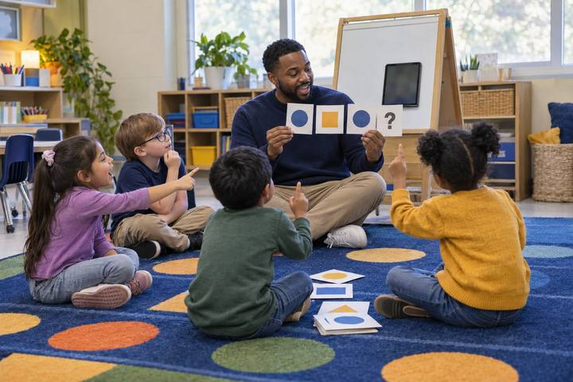

Aprendizaje estudiantilpara Grados K–2
El robot adivina
Los niños entrenan a un robot de mentiritas con tarjetas de dibujos y palabras, y descubren que la IA adivina a partir de patrones, y que una adivinanza puede estar equivocada.

Todas las actividades Aprendizaje estudiantil
Los estudiantes construyen con tarjetas de oraciones una "máquina de adivinar palabras" de papel, la ven inventar con toda seguridad un dato falso sobre un lago y descubren por qué una instrucción (prompt) más larga ayuda, pero nunca hace que un chatbot sepa cosas.
Un chatbot de IA generativa escribe adivinando qué palabra es probable que venga después, con base en los patrones de los textos de los que aprendió. En este juego, los equipos se convierten en esa máquina. Cuentan qué palabra sigue a cuál en ocho tarjetas con oraciones cortas y luego "escriben" oraciones nuevas sacando papelitos de unos vasos. Las oraciones salen gramaticalmente correctas y muchas veces chistosas. Luego, en la ronda del lago, la máquina produce una oración que suena a dato y es falsa, aunque cada una de sus piezas salió de tarjetas verdaderas. Los estudiantes prueban si una instrucción más larga arregla el problema y terminan pudiendo explicar, con sus propias palabras, por qué un chatbot puede sonar seguro y aun así equivocarse.
Enganche
Haga una pausa antes de la última palabra cada vez: "Arroz con…" (el grupo dice leche). "Había una…" (vez). "Estrellita, ¿dónde…?" (estás). Pregunte: "¿Alguien lo buscó? ¿Cómo lo supieron?" Tome respuestas y luego diga: "Hicieron una predicción. Han escuchado esas palabras juntas tantas veces que su cerebro adivinó lo que viene después. Un chatbot de IA generativa hace algo parecido, una palabra tras otra, con una cantidad enorme de textos. Hoy su equipo va a construir uno chiquito de papel".
Nota para el facilitadorAlgunos estudiantes gritarán finales chistosos ("¡arroz con pepinillos!"). Recíbalos con gusto: son la prueba de que hay más de una siguiente palabra posible, lo cual importa cuando el grupo empiece a sacar papelitos.
Modelar
Muestre la Tarjeta de cuento 1 bajo la cámara de documentos o escríbala en el pizarrón: el perro corrió hacia el parque . Señale cada palabra y pregunte: "¿Qué palabra vino justo después?" Haga una rayita de conteo en la Hoja B: después de el, una rayita para perro; después de perro, una rayita para corrió; después de corrió, una rayita para hacia; después de hacia, una rayita para el; después de el otra vez, una rayita para parque. Explique la única regla especial: "Cuando saquen parque, hueso, jardín, tapete, autobús, banco o mango, la oración termina. Pongan un punto."
Nota para el facilitadorLos estudiantes a menudo olvidan que "el" aparece dos veces en una tarjeta, así que recibe dos rayitas. Corríjalo aquí, en voz alta, para que todos los equipos empiecen bien.
Explorar
Los equipos se reparten las Tarjetas de cuento 1 a 8 para que cada persona cuente dos tarjetas en la Hoja B compartida. Luego hacen un papelito por cada rayita, escriben en él la siguiente palabra y lo echan en un vaso rotulado con la primera palabra. Por ejemplo, el vaso de corrió recibe tres papelitos que dicen hacia. Diga: "Sus vasos SON su máquina. A esto le llamamos entrenamiento: la máquina solo sabe lo que había en estas tarjetas".
Nota para el facilitadorTareas sugeridas: Lector (lee en voz alta cada par de palabras), Contador, Hacedor de papelitos, Guardián de los vasos. Qué buscar: el vaso de "el" debe tener 16 papelitos con muchas palabras distintas. Pregunte a un equipo: "¿Por qué este vaso está mucho más lleno y revuelto que el vaso de corrió?"
Practicar
Todas las oraciones empiezan con el. Saquen un papelito del vaso de el, escriban la palabra, regresen el papelito y luego saquen del vaso de esa palabra. Sigan hasta que la oración termine. Cada equipo escribe cinco oraciones y copia la mejor y la más chistosa en el rotafolio "Nuestra máquina dijo…". Haga tres preguntas a todo el grupo: "¿Suenan como oraciones de verdad? ¿Son ciertas? ¿La máquina había visto alguna vez exactamente estas oraciones?"
Nota para el facilitadorEspere cosas como "el gato durmió en el autobús". La gramática está bien porque los patrones de palabras son reales; el significado falla porque la máquina lleva la cuenta del orden de las palabras, no del mundo real. Opción más rápida: en lugar de sacar papelitos, cierren los ojos y toquen con un lápiz las rayitas de la fila de esa palabra.
Aplicar
Abran el sobre. Lea en voz alta las Tarjetas del lago 9 a 12. Son los únicos datos que tiene la máquina sobre dos lagos inventados. Esta vez la máquina mira las dos últimas palabras para adivinar la siguiente. La mayoría de los pares de dos palabras tienen una sola siguiente palabra posible, así que los equipos simplemente siguen la tarjeta. Solo hay dos tipos de bifurcaciones: después de está en puede venir Harlow o Pike, y después de es más puede venir profundo o grande. En cada bifurcación, lancen la moneda. Cada equipo genera tres oraciones que empiecen con Mossmere es y tres que empiecen con Wrenmere está. Muy pronto un equipo obtiene "Mossmere es más profundo que todos los lagos del estado." Detenga al grupo: "Ninguna tarjeta dice eso. La tarjeta 11 dice que el más profundo es Wrenmere. ¿De dónde salió esto? ¿La máquina está mintiendo?"
Nota para el facilitadorEsta es la gran idea. La oración falsa está hecha completamente de piezas verdaderas. La máquina no miente ni está descompuesta; no tiene una lista de datos con qué comparar, solo patrones de qué palabras van juntas. Póngale nombre: cuando una herramienta de IA dice algo falso con voz segura, la gente lo llama una alucinación.
Practicar
Ahora denle a la máquina tres palabras para mirar. Después de "Wrenmere está en", las tarjetas solo tienen Harlow. Después de "Mossmere es más", solo tienen grande. Los equipos vuelven a generar y notan que las oraciones falsas desaparecen. Pregunte: "Entonces, ¿una instrucción más larga y más clara hace que un chatbot siempre tenga la razón?" Guíe a los estudiantes hacia dos ideas: una instrucción más clara suele ayudar, Y no puede arreglar lo que la máquina nunca aprendió o aprendió mal. Si la tarjeta 11 tuviera un error, ninguna instrucción podría hacer que la máquina supiera la verdad.
Nota para el facilitadorAgregue el tema de la seguridad mientras todos están pensando en las instrucciones: "Una instrucción más larga significa que le estás contando más cosas a la máquina. Los nombres, las direcciones y las cosas privadas sobre ti o tus amigos nunca van en una instrucción".
Reflexionar
Sea honesto sobre la diferencia: "Los chatbots reales aprendieron de muchísimos más textos que ocho tarjetas. Usan pedacitos de palabras, no solo palabras completas. Miran hacia atrás mucho más que dos o tres palabras, y las personas los entrenaron más para que respondan de forma útil. Pero la acción principal es la que ustedes acaban de hacer: adivinar lo que probablemente viene después. Por eso un chatbot puede ser útil, sonar seguro y aun así equivocarse. Entonces, ¿qué hacemos? Verificamos con una fuente confiable: un libro, un sitio web en el que confíe un adulto, un experto". Los estudiantes completan la Hoja C. Recójala como evidencia.
Nota para el facilitadorPreste atención a los estudiantes que dicen que el chatbot "mintió" o "es tonto". Cuestiónelo con suavidad: "¿Nuestra máquina de papel mintió? ¿Qué estaba haciendo en realidad?" Lo que busca son explicaciones basadas en patrones y en adivinar.
Toda la lección está diseñada para hacerse sin dispositivos: las tarjetas, las hojas de conteo, los papelitos, los vasos y una moneda son toda la máquina. Si los papelitos toman demasiado tiempo, pida a los equipos que generen cerrando los ojos y tocando con un lápiz las rayitas de la fila de cada palabra. Si tiene poco tiempo, construya una sola máquina para todo el grupo al frente con estudiantes ayudantes y deje que los equipos se turnen para sacar papelitos.
Después de la ronda del lago, proyecte un chatbot aprobado por el distrito desde el dispositivo del maestro (los estudiantes nunca usan sus propias cuentas). Pregúntele: "¿Qué tan profundo es el lago Wrenmere?" Wrenmere es inventado, así que cualquier respuesta específica es inventada. Si inventa una profundidad o una ubicación, conéctelo directamente con la ronda del lago: "Hizo lo mismo que nuestros vasos". Si dice que no encuentra ese lago, elógielo y pregunte: "¿Qué haríamos si nos hubiera dado un número?" Luego hágale la misma pregunta dos veces y comparen las dos respuestas: que cambien las palabras cada vez muestra el mismo adivinar de sacar papelitos en acción. Con estudiantes mayores, los equipos pueden contar en una hoja de cálculo compartida que proyecta el maestro.
¿Necesita una pantalla? Esta lección funciona mejor sin pantallas. Sacar papelitos convierte la máquina de adivinar en algo que los estudiantes pueden ver y tocar, cosa que ninguna pantalla de chatbot muestra. Una demostración breve, dirigida por el maestro, al final se gana su tiempo de pantalla porque los estudiantes reconocen el mismo comportamiento en una herramienta real y practican verificarla.
Lo que debería poder ver o recopilar si funcionó.
Los estudiantes cuentan qué palabra sigue a cuál y generan oraciones sacando papeles al azar, y ven cómo la predicción a partir de patrones puede producir un dato falso dicho con seguridad.
En casa, los estudiantes juegan "termina mi oración" con su familia y luego les explican la ronda del lago en una oración: "Un chatbot adivina la siguiente palabra a partir de patrones, así que puede sonar seguro y aun así equivocarse, y por eso verificamos". En la próxima lección sobre IA, pida a los estudiantes que usen su explicación de la Hoja C antes de cualquier demostración de chatbot proyectada por el maestro.